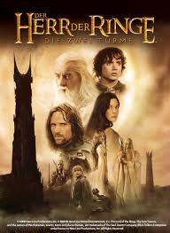
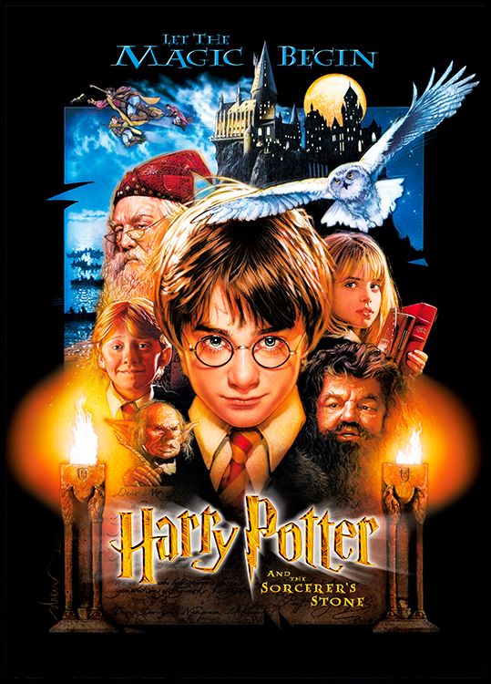
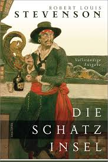

"Der Herr der Ringe"
Autor: J.R.R. Tolkien

"Nicht alle, die wandern,
sind verloren."
"Harry Potter und der Stein der Weisen"
Autor: J.K. Rowling

"Es sind unsere Entscheidungen, Harry,
die zeigen, wer wir wirklich sind, weit mehr als
unsere Fähigkeiten."
"Die Schatzinsel"
Autor: Robert Louis Stevenson

"Kein Schatz auf Erden und kein Glück
kann mit einem Freund verglichen werden, der uns
in schweren Zeiten beisteht."